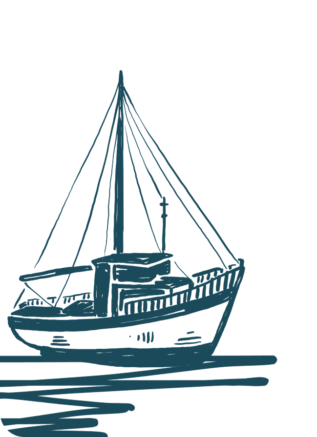

At Ocean Seven, we believe every creature in the deep deserves world-class care. From the smallest Clownfish to the grandest Whale Shark, our clinic is dedicated to the health, rehabilitation, and conservation of marine species. We bridge the gap between advanced veterinary medicine and the unique needs of aquatic life.
Specialized Expertise: Our team consists of experts in Marine Biology and Aquatic Veterinary Medicine, specializing in everything from shell repair to complex bacterial treatments.
Advanced Facilities: We utilize state-of-the-art water treatment systems and specialized immersion therapy tanks to ensure a stress-free recovery for every patient.
Conservation First: A portion of every appointment goes toward local reef restoration and the protection of endangered species like the Green Sea Turtle.
| Species Treated | Success Rate | Emergency Care |
|---|---|---|
| 50+ Unique Marine Species | 97% Rehabilitation & Release | 24/7 Aquatic Response Team |